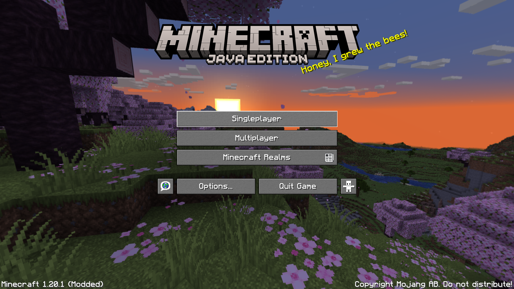
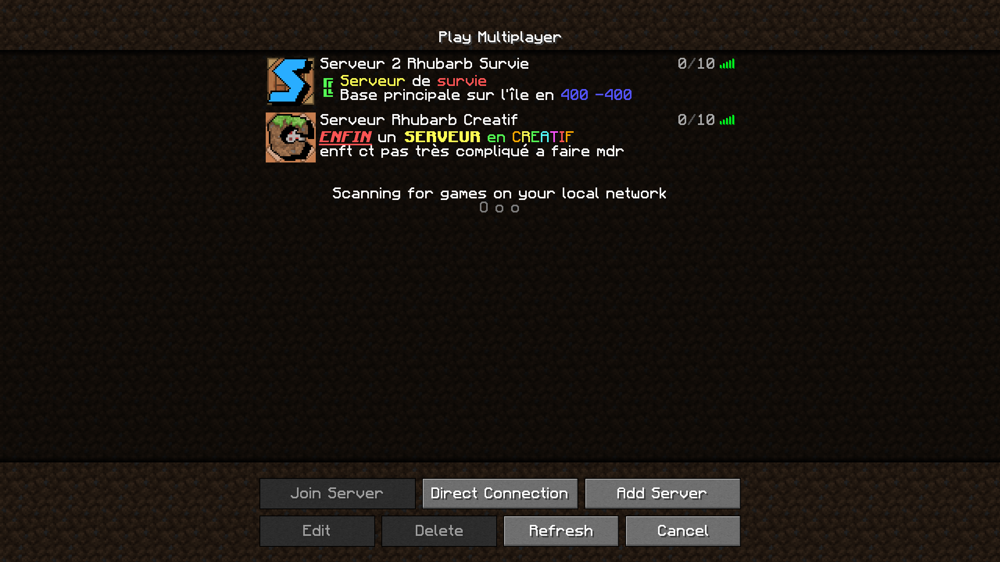
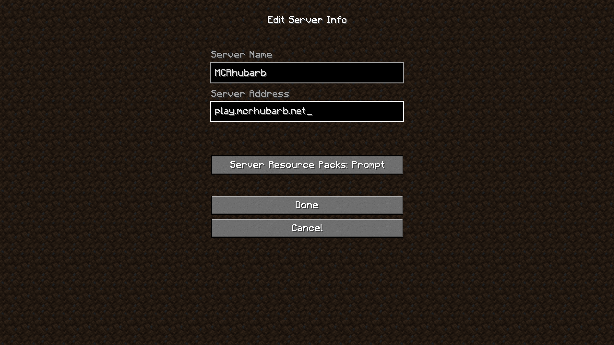
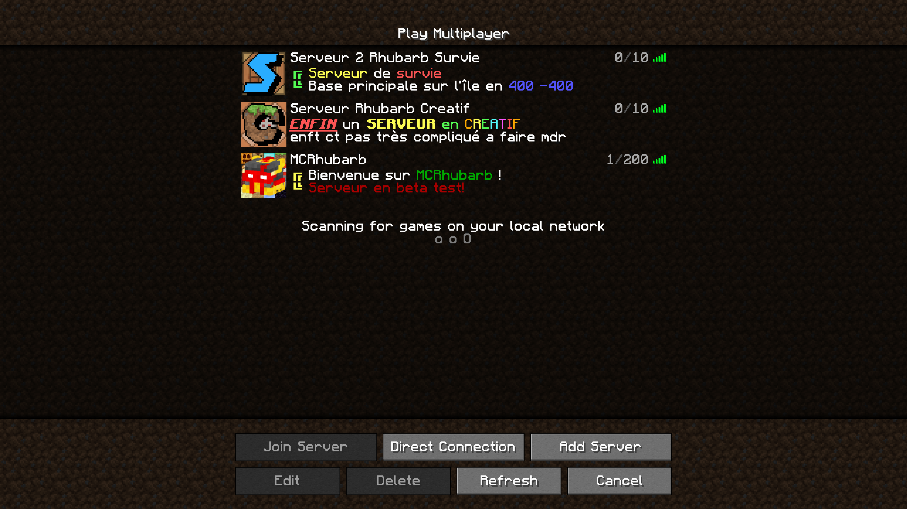
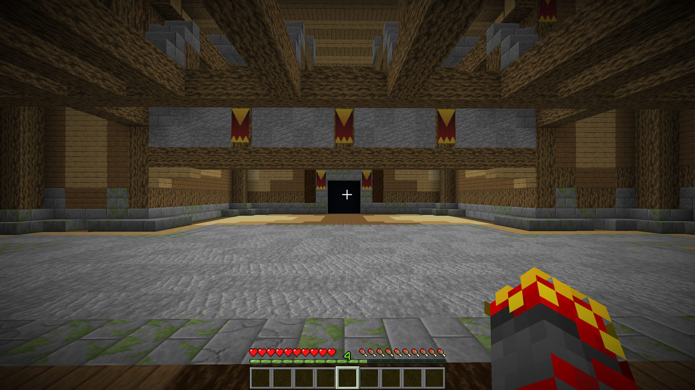
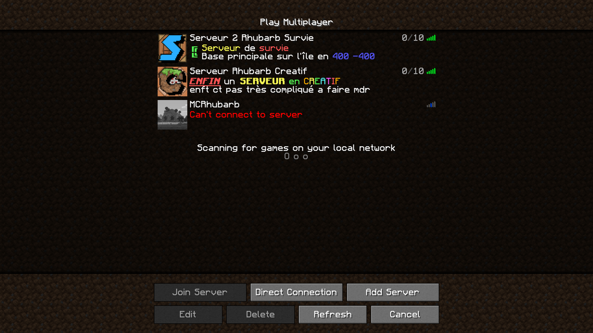

Comment jouer:
Une fois sur minecraft, cliquez sur multijoueur.

une fois dans la liste des serveurs, cliquez sur "Ajouter un serveur".

Maintenant, vous pouvez entrer le nom que vous voulez, et entrez play.mcrhubarb.net dans l'adresse, entrer autre chose ne foncionnera pas.

Si vous avez tous fait correctement, le serveur devrait s'afficher comme ci-dessous

Vous n'avez plus qu'à double cliquer sur l'icône du serveur et vous voila connecté!

Cependant, si le serveur affiche "Connexion impossible", et/ou qu'il n'affiche pas d'icône cela peut soit être du à une erreur de frappe dans
l'adresse du serveur, ou au fait que le serveur ne soit pas en ligne actuellement ou d'une erreur technique, si le problème persiste vous pouvez me contacter.

Revenir à l'acceuil